How to model hydro power coupling
This how-to aims at demonstrating how we can model a hydropower system in Spine (SpineOpt.jl and Spine-Toolbox) with different assumptions and goals. It starts off by setting up a simple model of system of two hydropower plants and gradually introduces additional features.
In each of the next sections, we perform incremental changes to the initial simple hydropower model. If you want to keep the database that you created, you can duplicate the database file (right-click on the input database and select Duplicate and duplicate files) and perform the changes in the new database. You need to configure the workflow accordingly in order to run the database you want (please check the Simple System tutorial for how to do that).
Context
The goal of the model is to capture the combined operation of two hydropower plants (Språnget and Fallet) that operate on the same river as shown in the picture bellow. Each power plant has its own reservoir and generates electricity by discharging water. The plants might need to spill water, i.e., release water from their reservoirs without generating electricity, for various reasons. The water discharged or spilled by the upstream power plant follows the river route and becomes available to the downstream power plant.
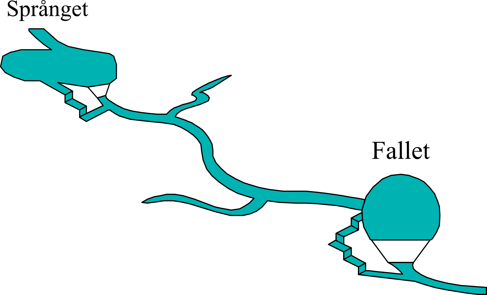
Setting up a Basic Hydro power Model
The picture below shows how such a system of hydro power plants translates to a SpineOpt model. It looks quite daunting at first glance, but we'll break it down in smaller parts in the following subsections.
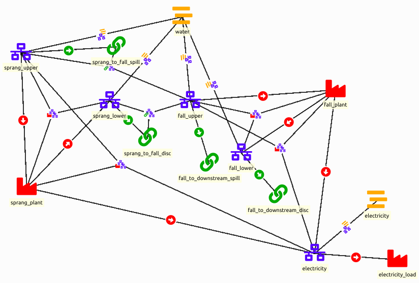
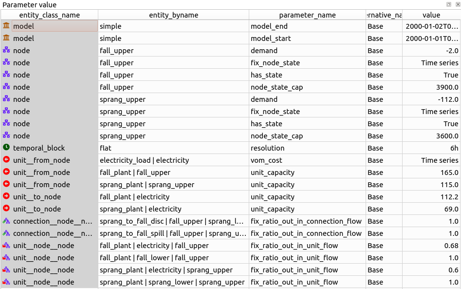
Model
Before we can create the hydro power system, we'll have to define a model, temporal structure and stochastic structure. The basic model in the templates will do. Though, we'll change the temporal resolution to 6h and the model start / end to for 1 day as an example.
As for the report, we are typically interested in the outputs node_state, unit_flows and connection_flows.
Nodes and commodities
Nodes are at the center of a SpineOpt system, so let's start with that. There are other ways to model hydro power plants but here we represent each hydro power plant with 2 nodes, an 'upper' node to represent the water arriving at each plant and a 'lower' node to represent the water that is discharged and becomes available to the next plant. The general idea of splitting these in 2 nodes is to be able to simulate a time delay between the entrance and the exit (although in this tutorial we will not go in detail in this time delay).
Additionally we need a node for electricity.
Optionally, we can indicate that we are dealing with water flows and electricity production through commodities. Note that commodities are only indicative and are not strictly necessary. As in the picture below, we define a 'water' and an 'electricity' commodity and we connect these to the nodes with node__commodity relations.
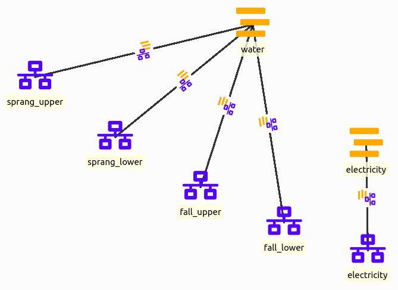
Flows by means of connections
We'll ensure a correct flow between the nodes through connections. The flows include:
- local inflows in the reservoirs,
- internal flows in the hydro power plants (between the 'upper' and 'lower' nodes),
- the discharge flow that exits the Språnget hydro power plant at the lower node and flows to the upper node of the Fallet hydro power plant,
- the spill flow that bypasses the Språnget hydro power plant at the upper node and flows to the upper node of the Fallet hydro power plant,
- the discharge flow that exits the Fallet hydro power plant at the lower node and flows to the downstream river,
- the spill flow that bypasses the Fallet hydro power plant at the upper node and flows to the downstream river.
For the local inflows in the reservoirs, we actually do not need a connection. Instead we can model this as a negative demand in one of the nodes of the power plant. For examlpe, consider an inflow of -112 for Språnget and one of -2 for Fallet.
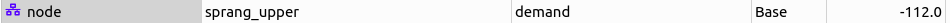 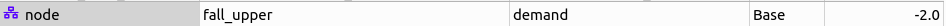
The flow within each hydro power plant, i.e. the discharge flow between the 'upper' and the 'lower' node to generate the electricity, will also not be handled by the connection but by the units. In fact, anything that happens between the 'upper' and 'lower' nodes will be handled by the units.
For each of the remaining flows we create a connection entity. These connections need to be connected to nodes to function properly. To that end we'll use the connection__from_node. As the name suggests, we connect the connection to the node where the flow comes from, e.g. the 'lower' node of the Språnget hydro power plant to the connection between the 'lower' node of the Språnget and the 'upper' node of the Fallet hydro power plant. The result is shown in the picture below.
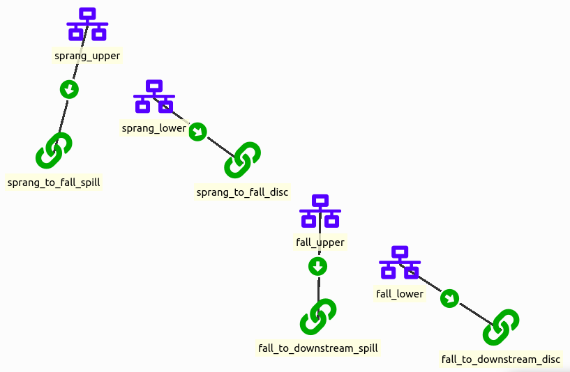
As the flows are unbound by default, we also need to define the relation between the nodes and the flows with the connection__node_node entities. We need one between the 'upper' node of the Språnget hydro power plant and the 'upper' node of the Fallet hydro power plant for the corresponding spill connection. We also need one between the 'lower' node of the Språnget hydro power plant and the 'upper' node of the Fallet hydro power plant for the corresponding discharge connection.
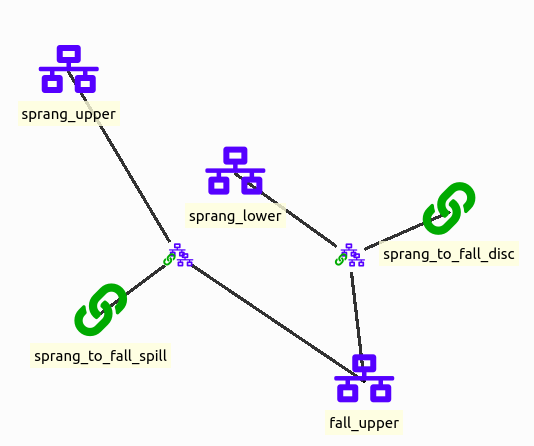
We bind the flows by setting the fixratiooutinflow to 1.0.
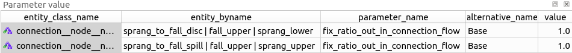
The result should look like this:
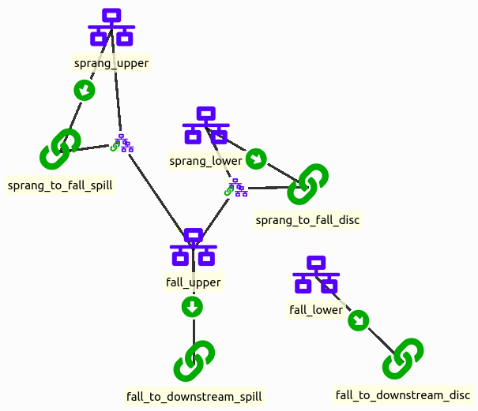
Energy conversion by means of units
Each hydro power plant uses a unit to convert the flow of water to electricity. These units are connected to the 'upper' and 'lower' nodes of the hydro power plants and the 'electricity' node. Water enters the 'upper' node, so the 'upper' node is connected to the unit through the unit__from_node. Water is then discharged, so the 'lower' node is connected to the unit through the unit__to_node. As the water discharges, electricity is produced, so the 'electricity' node is also connected to the unit through the unit__to_node. Below is a figure of these units. There is another unit connected to the electricity node but we'll get back to that later.
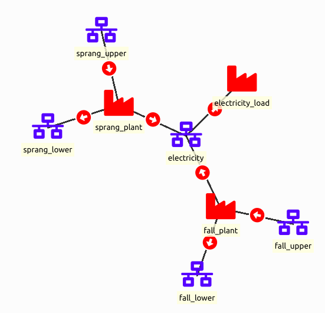
Through the relations between the units and the nodes, we can set the capacity for the water flow and the electricity generation.
For example, the capacity of the water flow from the 'upper' node to the the unit is 115 for Språnget and 165 for Fallet.
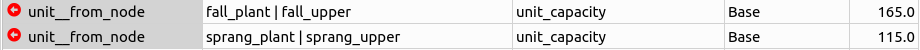
For example, the capacity of the electricity production from the unit to the 'electricity' node is 112.2 for Fallet and 69 for Språnget.
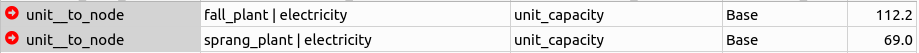
Additionally, we add a unit to represent the income from selling the electricity production in the electricity market. The electricity price will be represented by a negative variable operation and maintenance (VOM) cost. That parameter needs to be set at the unit__from_node between the electricity node and the unit. Any (negative) value is fine, but we show an example below.
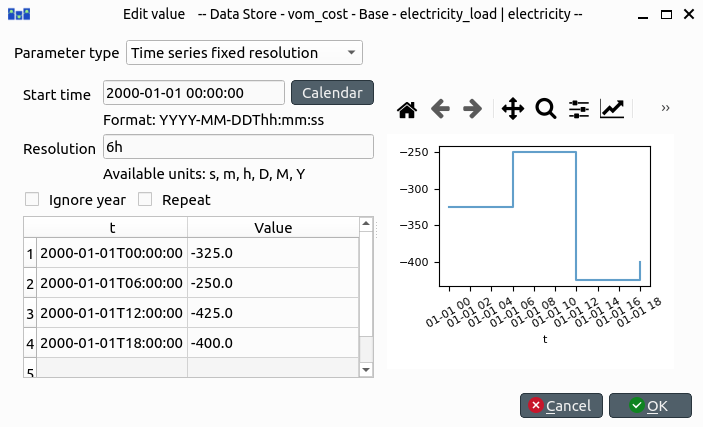
Again, by default the flows are unbound, so we have to bind them with unit__node_node entities. The discharge flow from the 'upper' node flows in its entirety to the 'lower' node. As such the unit__node_node relation between the hydro power plant unit and the 'upper' and 'lower' node gets a value of 1.0 for the fix_ratio_out_in_unit_flow.
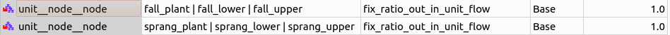
For the conversion from water flow to electricity, we need to take the conversion efficiency of the plant into account. For example, the fix_ratio_out_in_unit_flow for the unit__node_node entity between the unit, the 'upper' node and the 'electricity' node is 0.6 for the Språnget hydro power plant and 0.68 for the Fallet hydro power plant.
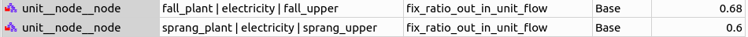
The result should look like this:
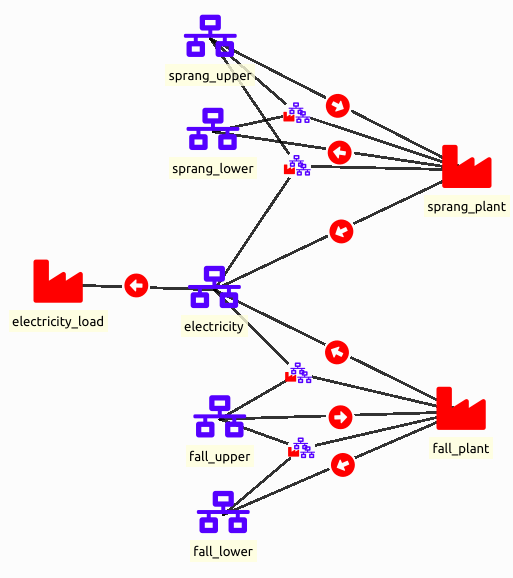
Storage in nodes
To model the reservoirs of each hydropower plant, we leverage the state feature that a node can have to represent storage capability. We only need to do this for one of the two nodes that we have used to model each plant and we choose the upper level node. To activate the storage functionality of a node, we set the value of the parameter has_state as True (be careful to not set it as a string but select the boolean true value). Then, we need to set the capacity of the reservoir by setting the node_state_cap parameter value.
Depending on the constraints of your hydro power plant, you can also fix the initial and final values of the reservoir by setting the parameter fix_node_state to the respective values (use nan values for the time steps that you don't want to impose such constraints). When fixing the initial value of a reservoir value, the value should be fixed at ‘t-1’ instead of ’t0’. That is because the initial value of a reservoir means the previous value before the first hour.
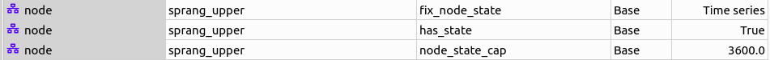 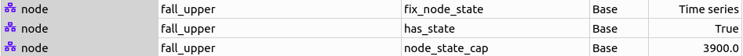
Examining the results
At this point the model should be ready to run and you can examine the results in the output database with the Spine DB editor.
Maximisation of Stored Water
Instead of fixing the water content of the reservoirs at the end of the planning period, we can consider that the remaining water in the reservoirs has a value and then maximize the value along with the revenues for producing electricity within the planning horizon. This objective term is often called the Value of stored water and we can approximate it by assuming that this water will be used to generate electricity in the future that would be sold at a forecasted price. The water stored in the upstream hydropower plant will become also available to the downstream plant and this should be taken into account.
To model the value of stored water we need to make some additions and modifications to the initial model.
First, add a new node (see adding nodes) and give it a name (e.g., stored_water). This node will accumulate the water stored in the reservoirs at the end of the planning horizon. Associate the node with the water commodity (see node__commodity).
Add three more units (see adding units); two will transfer the water at the end of the planning horizon in the new node that we just added (e.g., Språnget_stored_water, Fallet_stored_water), and one will be used as a sink introducing the value of stored water in the objective function (e.g., value_stored_water).
To establish the topology of the new units and nodes (see adding unit relationships):
- add one unit__from_node relationship, between the value_stored_water unit from the stored_water node, another one between the Språnget_stored_water unit from the Språnget_upper node and one for Faller_stored_water from Fallet_upper.
- add one unit__node__node relationship between the Språnget_stored_water unit with the stored_water and Språnget_upper nodes and another one for Fallet_stored_water unit with the stored_water and Fallet_upper nodes,
- add a unit__to_node relationship between the Fallet_stored_water and the stored_water node and another one between the Språnget_stored_water unit and the stored_water node.
Now we need to make some changes in object parameter values.
- Extend the planning horizon of the model by one time step
- Remove the fix_node_state parameter values for the end of the optimization horizon as you seen in the following figure: double click on the value cell of the Språnget_upper and Fallet_upper nodes, select the third data row, right-click, select Remove rows, and click OK.
- Add an electricity price for the extra time step. Enter the parameter vom_cost on the unit__from_node relationship between the electricity_node and the electricity_load and set 0 as the price of electricity for the last time step. The price is set to zero to ensure no electricity is sold during this hour.
Finally, we need to add some relationship parameter values for the new units:
- Add a vom_cost parameter value on a value_stored_water|stored_water instance of a unit__from_node relationship, as you see in the figure bellow. For the timeseries we have imposed a zero cost for all the optimisation horizon, while we use an assumed future electricity value for the additional time step at the end of the horizon.
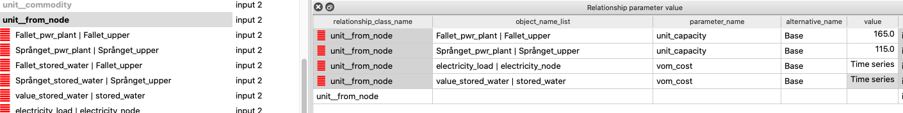
- Add two fix_ratio_out_in_unit_flow parameter values as you see in the figure bellow. The efficiency of Fallet_stored_water is the same as the Fallet_pwr_plant as the water in Fallet's reservoir will be used to produce electricity by the the Fallet plant only. On the other hand, the water from Språnget's reservoir will be used both by Fallet and Språnget plant, therefore we use the sum of the two efficiencies in the parameter value of Språnget_stored_water.
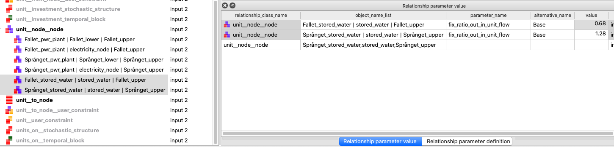
You can now commit your changes in the database, execute the project and examine the results! As an exercise, try to retrieve the value of stored water as it is calculated by the model.
Spillage Constraints - Minimisation of Spilt Water
It might be the case that we need to impose certain limits to the amount of water that is spilt on each time step of the planning horizon, e.g., for environmental reasons, there can be a minimum and a maximum spillage level. At the same time, to avoid wasting water that could be used for producing electricity, we could explicitly impose the spillage minimisation to be added in the objective function.
Add one unit (see adding units) to impose the spillage constraints to each plant and name it (for example Språnget_spill).
Remove the Språnget_to_Fallet_spill connection (in the Object tree expand the connection class, right-click on Språnget_to_Fallet_spill, and the click Remove).
To establish the topology of the unit (see adding unit relationships):
- Add a unit__from_node relationship, between the Språnget_spill unit from the Språnget_upper node,
- add a unit__node__node relationship between the Språnget_spill unit with the Fallet_upper and Språnget_upper nodes,
- add a unit__to_node relationship between the Språnget_spill and the Fallet_upper node,
Add the relationship parameter values for the new units:
- Set the unit_capacity (to apply a maximum), the minimum_operating_point (defined as a percentage of the unit_capacity) to impose a minimum, and the vom_cost to penalise the water that is spilt:
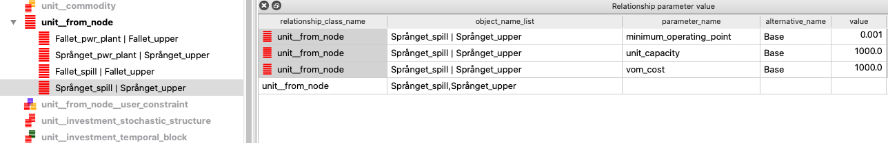
- For the Språnget_spill unit define the fix_ratio_out_in_unit_flow parameter value of the min_spillage|Fallet_upper|Språnget_upper relationship to 1 (see adding unit relationships).
Commit your changes in the database, execute the project and examine the results! As an exercise, you can perform this process for and Fallet plant (you would also need to add another water node, downstream of Fallet).
Follow Contracted Load Curve
It is often the case that a system of hydropower plants should follow a given production profile. To model this in the given system, all we have to do is set a demand in the form of a timeseries to the electricity_node.